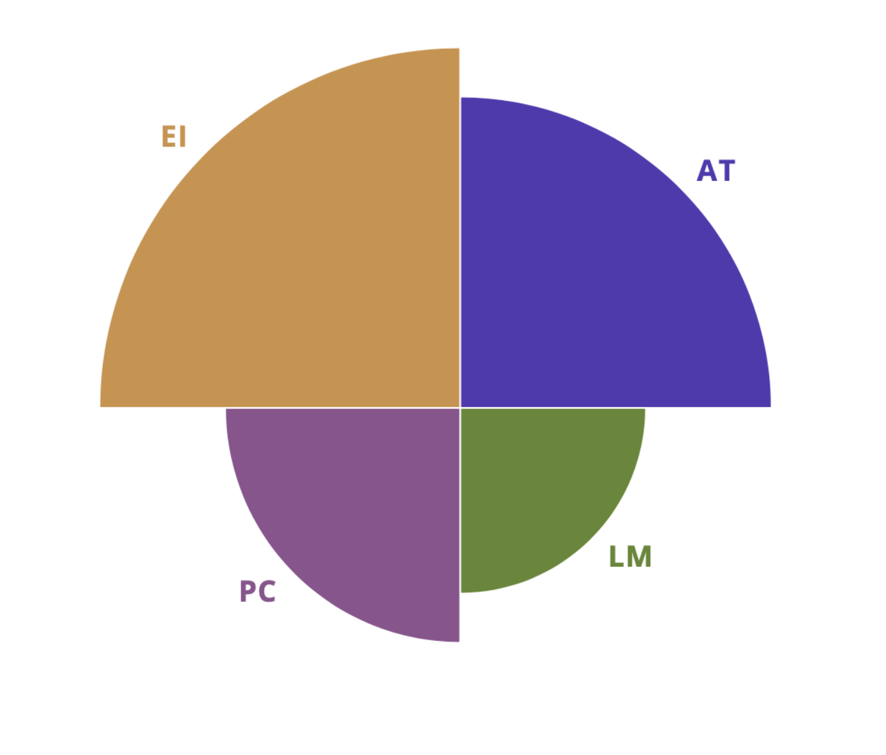
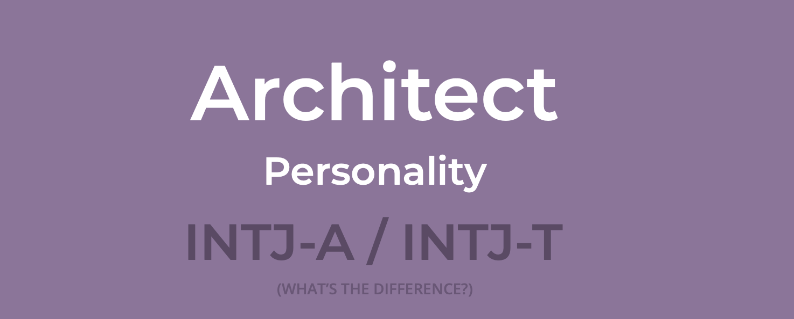
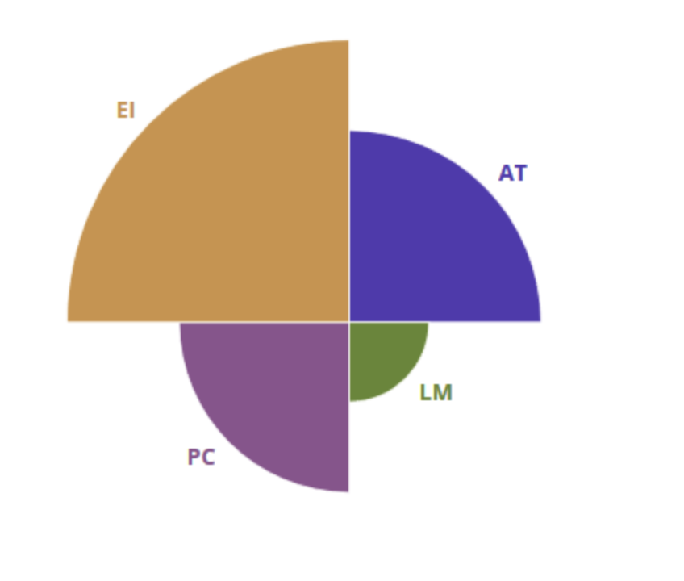
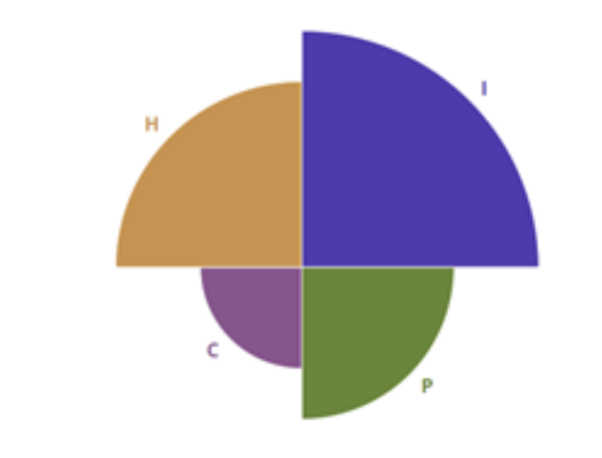

Team Profile
Team Name: Team Peak
Personal Information
Do Hoang Quan
S3800978
Hello! My name is Do Hoang Quan. I am a Vietnamese, born and raised in Ho Chi Minh City. I want to be an UIUX Designer, to build experiences that enhances and delights people’s lives. So far, I have been learning UIUX design for 2 months and I still have more plans. Combined with coding and IT skills that I will learn here at RMIT, I hope to be a capable IT professional.
View profile
Taesung Yoon
S3847581
Hi! My name is Taesung Yoon. I am 20 years old. My personal email address is dbsxotjdaos@gmail.com. I'm from Korea and I can speak Korean and English. My hubby these days is doing workout in the gym, cooking, and playing games. Also, I have one cat and her name is "Porori". I got her name from a cartoon.
View profileJae Jun Kim
S3741333
My name is Jae Jun Kim, my email address is s3741333@rmit.edu.vn. First of all, I am from the Republic of Korea thus, I speak Korean and English as well. Normally, most Korean are polite when they meet people because they do not like to have a bad effect on other people and it is a kind of Korean culture. My hobbies are listening to music and using a computer.
View profileTeam Profile
Do Hoang Quan
Auditory: 10%
Visual: 45%
Tactile: 45%
Visual / Tactile Learner
Taesung Yoon
 Auditory: 30%
Visual: 35%
Tactile: 35%
Visual / Tactile Learner
Jae Jun Kim
Auditory: 25%
Visual: 35%
Tactile: 40%
Visual / Tactile Learner
How this information is helpful
Although other traits differ, one personality aspect that the team share is that we take and believe information more from the internal world, apparent by the Intuitive trait in the Myers-Briggs test.
Secondly, our team learns most effectively through Tactile and Visual.
Thanks to this common ground, it’s easier for teammates to communicate and share ideas. As we share the same effective methods of learning, we can utilize this knowledge to better get our knowledge across.
Furthermore, our teammates' differences complement each-others. Our team consists of both Introvert and Extrovert, Feelings and Thinkings, as well as Perception and Judging traits. Although issues might arise due to these differences, thanks to our common grounds and focus on communication, we can still collaborate well and utilize our differences to help each-other.
Ideals Jobs
| Quan | Taesung | Jae Jun | |
|---|---|---|---|
| Job | UI/UX Designer | Security Engineer | Database Developer |
| Description | Design user interfaces with the focus on maximizing usability and the user experience | Testing software and monitoring systems for security breaches or intrusions | Ensure that database management systems can handle massive quantities of data |
| Common |
|
||
| Stack | Front-end | Back-end | Back-end |
| Focus | What the user sees and feels when using the product | The security, reliability, and trustworthiness of the product | Ensure efficiency, consistency and scalability of the product and its data |
| Average salary | ~58K USD / year | ~99K USD / year | ~73K USD / year |
| Skills required |
|
|
|
| Similar career plans |
|
||
Tools
Group website: https://s3800978.github.io/intro_to_it_asgmt2/
GitHub link: https://github.com/s3800978/intro_to_it_asgmt2

Comments on how well the audit trail on the Git repository reflects group’s work:
Quan: “The trail actually reflected very clearly how the members contributed to the project, and our group’s workflow. As the person who summarized content from other members, my commits might have been more numerous, but that does not mean other members worked less. Everyone in the group contributed equally, and always got their job done on time.”
Taesung: “Audit trail on the Git repository is really helpful when we share the documents and resources. Also, the UI of the Git makes the group project more clear.”
Jae Jun: “Actually, trailing helps to share our information and makes it easy to separate files which we uploaded. We have shared our files with what we need and we can check who did work or not from check Git. Then we advise peers sometimes.”
Industry Data
Rankings and information taken from Burning Glass data provided from the assignment.
What are the Job Titles for your group’s ideal jobs? How does each of these rank in terms of demand from employers?
Quan: UI/UX Designer • Ranked around 14 in terms of demand.
Taesung: Computer Security Expert • Ranked around 13 in terms of demand.
Jae Jun: Database Developer • Ranked around 11 in terms of demand.
From your group’s ideal jobs, you can identify a set of skills required for these jobs (we will refer to this as your group’s required skill set). These can be divided into general skills (communication, problem-solving, writing etc) and IT-specific skills (Javascript, SQL, etc).
Group’s IT-specific skills:
- Programming / Coding (Python, Javascript, HTML…)
- Analytics
- Design
- Database Development
Group’s general skills:
- Communication
- Problem-solving
- Organizational
- Troubleshoot
- Creativity
How do the IT-specific skills in your required skill set rank in terms of demand from employers?
Group’s skills:
- Programming / Coding (Python, Javascript, HTML…) ranked #2
- Analytics ranked #9
- Design ranked #10
- Database Development (SQL...) ranked #1
Individual’s skills and comments:
Quan: “Graphic Design, Website Productions are my IT-specific skills that were named inside Burning Glass. Overall, they ranked around the bottom half of the top 25 skills. ”
Tae Sung: “Computer security experts should be masters in most C languages, tools, and skills. And I can recognize these estimate most of highest rates (SQL, JavaScript, JAVA, Microsoft Windows, Microsoft C#, Linux, Software engineering, Net programming, Python).”
Jae Jun: “Firstly, Database Developer requires Bachelor's in Computer Science, Information or related field and excellent hands-on SAP Universe, Reports and Dashboard development. Furthermore, the experience of relational databases is important such as SQL, Oracle skills, ETL development experience. Those experiences should be 2-years in minimum.”
How do the general skills in your required skill set rank in terms of demand from employers?
Group’s skills:
- Communication ranked #1
- Problem-solving ranked #2
- Organizational ranked #3
- Troubleshoot ranked #6
- Creativity ranked #9
Individual’s skills and comments:
Quan: “As the UIUX Designer that will work with many teams, communication is an essential skill, which makes sense that it’s the highest ranked. Products are not made by a single person, but a whole team. The ability to get your ideas across is very important. Problem solving, organizing, and creativity are also extremely important in a UIUX Designer’s skill set.”
Tae Sung: “To solve computer security situations, computer security experts require these skills. Communication skills, problem solving, troubleshooting, planning, creativity, research, decision making. Most of them rate the highest demand from employees.”
Jae Jun: “Great teamwork is required as well, good english communication skills, interpersonal and collaboration skills. Moreover, strong team working ability is required.”
What are the three highest-ranked IT-specific skills which are not in your required skill set?
Group’s skills:
- Project Management
- Business Management
- Scrum
Individual’s skills and comments:
Quan: “SQL, Java, Windows are the 3 highest ranked IT-skills that are not required in my skill set. JavaScript is useful in web development, so it’s a requirement.”
Tae Sung: “I think I don't need much organisational skill because when I see the other aspects, I need a communication skill. When I need to get solutions for vulnerable components, I need problem solving skills. But, at the moment, I can't guess any ways to use organisational skill if I am a computer security expert.”
Jae Jun: “I think there's no one not matched to my ideal job. Because the aim of my ideal job is searching for vulnerable parts in the network and software. So, I have to be familiar with the highest demand skill and know how to use it.”
What are the three highest-ranked general skills which are not in your required skill set?
Group’s skills:
- Writing
- Planning
- Detail-oriented
Individual’s skills and comments:
Quan: “Writing, Mentoring, Management are the 3 highest general skills that are not in my required skill-set. Since most of the highest demand general skills are teamwork-related, and UIUX designers always have to work with a team, my skill set requires most of the top skills.”
Tae Sung: “Absolutely, I have to know how to handle JAVA, ITIL and Graphic Design as well. then apply it to collect important information to my work. It is to organize the data based on the collected information to increase the efficiency of functions such as search.”
Jae Jun: “Problem Solving, Organisational Skills and Research are required in Database, I think. When the co-workers work, problem solving ability will be important and when I collect information I have to organize with my co-workers. In addition, the ability to research information which I need will be quite important as well.”
Having looked at the Burning Glass data, has your opinion of your ideal job changed? Why or why not?
Quan:
“No, I still want to pursue it. As seen from the Burning Glass data, compared to other jobs in the sectors, UIUX Designer is still low, which means there is a short supply of them, and as such, this job will be sought out and paid better. Not just that, this job is in my strong suit of skills. Information Architecture (grouping and layout of information), User Empathy and Research, are areas I have been trained in. Furthermore, this career path let me do what I love most: helping people. A well thought out, well designed product can empower people from anywhere.”
Taesung:
“My mind has not changed much because I am sure that every program, server, and websites need my ideal job's role.”
Jae Jun:
“Actually, not. Because I've already analyzed everything I need to be a database developer. Besides, I know what additional capabilities I need and what I need to do, so my desire to be a database developer remains unchanged.”
IT Work
- IT professional: Mrs. Nguyễn Xuân Thi
- LinkedIn: Nguyen Xuan Thi - Trainer - UI/UX Training Course | LinkedIn
- Profession: User Interface and User Experience Designer
- Current employment: KMS Technologies
- Experience: 14 years
- Worked on: Grove HR (GE Web, GO Mobile), Athenka Chatbot
What kind of work is done by the IT professional?
It’s in our knowledge that you are a UIUX Designer. Can you please give us a quick explanation of your job?
So a job of a UIUX Designer is to make products like apps and websites that are both visually beautiful and functionally easy-to-use. If you’ve ever loved a product because of how it always gets the job done and never makes you guess, then it’s because a good designer somewhere has done a lot of good work.
That’s really easy to understand! So how do designers go about their job?
It’s not as simple as you think! In making intuitive products, designers have many responsibilities to handle, and the process is extensive.
So what is the first step to design a good UIUX?
The step that kick-starts the process is user-centred design. By asking questions, doing surveys and researching on user's habits, designers can learn the scale, culture, process, etc. of the target demographic. Using this knowledge, designers can figure out workflows, pain points, and users’ goals to build functional products.
What do designers do once they have finished researching?
We then move to content, which has two parts: content strategy, which is the planning and management of content, and information architecture, the structure and layout of content.
The goal of these steps is to engage the users with cohesive, meaningful and easy-to-find content and information.
That’s a lot of work and preparation! When do we get to design part of UIUX Design?
Actually, this is that part. Once all the foundation is laid, designers begin to work on the two parts of design: visual design and interaction design. This is the step that designers focus on building the interface to be both beautiful and intuitive. Using color, sizing, spacing, etc. and components like buttons and toggles, designers clue users in on how the products will work while making it delightful to look and use.
With so much work and the process so long, how can designers know if their work is good?
There is of course testing. A lot of testing and tracking user's behaviors, repeatedly! Armed with the knowledge of their research and understanding of their work, designers are essential in the testing process. During this phase, designers can test and learn about shortcomings in their designs, and improve upon it.
That’s a lot of work! In your expertise, what benefits does good UIUX bring to a product?
By making a product more enjoyable and reliable, one of the first benefits is that there will be more frequent visits and for longer durations to the products, which increases sales. This also lets them more easily acquire new users. Secondly, since the product is easy to use, user errors are decreased, which also decreases customers support costs and word of mouth complaints.
Most importantly though, as the final result of all other benefits, great UI and UX instills trust in the products and the brand. This is the differentiating factor that really pushes the product above the competitors.
What kinds of people does the IT professional interact with? Are they other IT professionals? Clients? Investors? The general public?
Can you please tell us who you usually work with in your job?
As the middle part of the process, UIUX designers will collaborate with nearly all departments. I’ve had the pleasure to work with developers, other designers, even management and the wider public.
Which of those people do you work most with?
It’s the devs. Being the department that brings our designs to life through coding, developers are essential in the network of designers. This back-and-forth relationship informs both sides of how the products will work and therefore how to build it.
Do you also work with other designers?
It depends on the company and job, but I have. As with every team, designers can come from different backgrounds, work habits, skill levels, etc., so it’s important to be respectful and considerate to best work together.
Do you work with higher management?
Of course, designers receive requirements from the Product Owner. We put a lot of work into understanding these requests, anticipating how it will play out in the future. Sometimes designers have to clarify unclear aspects, and even object to unfeasible ideas to the Product Owner.
You’ve said before that designers have the responsibility to research the market. Is that the public and client?
Yes. These are the people who the product aims to satisfy, after all. We as designers must be able to pose questions and gather insights from this group. The better they are as research, empathizing, and understanding this group, the better the final product can be.
Who usually gives feedback to designers about their work?
It’s the Quality Assurance and Quality Control team. There’s usually a lot of conflict and misunderstanding that might arise here, but good designers must be able to understand, receive constructive criticism, and extract useful feedback from this team objectively and not take things personally.
Is there any advice you’d like to share with students when it comes to working with others?
Communication is essential, as well as having an open mind and the ability to see from another’s perspective. To be a good UIUX designer, or just a good teammate, you must be able to understand clearly and get your ideas across a wide range of people.
Where do the IT professionals spend most of their time?
As you’ve mentioned earlier, the design process is very extensive. Which part of that process takes the most time?
Example of a design system
In my opinion, the most time-consuming task in a UIUX designer’s work is planning, designing, and anticipating the master design system, which is a series of components (such as buttons, toggles, fields…) that can be reused in different combinations.
What about this system makes it worth the time and effort put in?
Even though it’s time consuming, by design, this system helps designers and developers easily build scalable and consistent products across a variety of platforms. This system is the direction in which the business rule of the field is heading.
How much time does it usually take you to complete this phrase?
In my experience, designing just the first 4-5 master pages of the design system for large products can take up to one whole month. For smaller products, this process usually lasts around a week or two.
Wow that’s really time-consuming? Can you explain the reason why it takes so long?
It’s because there are many aspects to consider that require not just research but also experience. I first have to consider the scalability of the product. Sometimes the decision to scale a product from small to large might come after the design has been done, so I have to anticipate how to design ahead. Even while designing the first few pages, I already have to plan out how it will look and work 100s of pages into the future. Like how will the layout change when the content is too long? What about multiple languages? How will information be presented on different screen sizes? Any mistakes made in the foundation will be incredibly time-consuming and costly to fix, so it is essential to take time and consider carefully here.
Since our question is “where” you spend most of your time, can you please tell us a bit about where you physically work?
Well I am currently spending most of my time at KMS Technologies. I chose KMS because it is one of the few rare Vietnamese companies capable of delivering products on a global scale.
What aspect of their position is most challenging?
Looking back on more than 10 years in the field, which is the most challenging aspect of your job, one that requires you to innovate?
So, designing a product that meets all the requirements of a great UIUX: consistent, functional, scalable, beautiful is already difficult enough. Perfecting these aspects already takes countless hours of research and hard work. However, with knowledge, this is achievable. Something far more challenging, and infinitely more elusive, is adding the “wow” factor.
Can you put into words what it is specifically?
It’s the colors, movements, shapes, sizing, spacing... that not only embodies the brand but offer a unique and delightful experience to its users. It’s something unexpected, above-and-beyond, I think. This is the final ingredient that can really make a successful and memorable product.
Thank you so much for your time and sharing with us your valuable knowledge and experience!
IT Technologies
Machine Learning
Machine learning is an application of artificial intelligence(AI). Machine learning technology can study and improve themselves beyond programming. It can access the data and use it to learn. This process starts with taking a look at the data, having an experience, looking for a pattern, and having a better decision. The main goal of this process is a machine can learn themselves without human help or intervention.
This technology has four types. Supervised, unsupervised, semi supervised, and reinforcement.
Supervised learning is an algorithm that makes a mathematical model with data of inputs and the desired outputs called training data. And it has some examples that contain another input and desired output known as a supervisory signal. In the mathematical situation, these examples are discussed by an array, vector, or feature vector, and data is represented as a matrix. Supervised learning algorithms are studying using these inputs to predict the output related to new inputs. However, if outputs are restricted values, it uses algorithms called classification algorithms. If outputs have a numerical value in the range, it uses regression algorithms.
Unsupervised algorithms have inputs only and it finds output and structure in the data. These algorithms were learned from unclassified test data. It learns similarities from each different data and analyzes absences and similarities.
Semi Supervised algorithms is a middle between unsupervised algorithms and supervised algorithms. Some examples are labeled and other examples are not labeled. People use these examples to make conjunction. After that it can improve in learning accuracy.
Reinforcement learning is an area of machine learning. Software developers are required to do some actions in a specific environment. This field, called Markov Decision Process(MDP) is affected by some regulations or norms such as game theory, control theory, operations research, and genetic algorithms. Also, many forms and disciplines can be used in this circumstance. Most of these algorithms use dynamic programming techniques. It doesn't anticipate exactly in the MDP but it is used when the exact model is in an infeasible situation. This algorithm is used in autonomous vehicles or bot in the games.
Today, when they train the AI to have machine learning algorithms, developers should find the right examples and A.I is starting from the bottom to learn. It's like taking care of the baby. However, technological advances will make the future of machine learning bright. According to experts, a multifunctional model can solve this challenge. That model is already trained about some fundamental parts like recognizing user's faces or comprehending differences between dogs and cats. On the other hand, there is an obstacle to acquiring this model. When we build this model, it needs a lot of interesting, great quality computer systems and the structure of the model.
But, after this advance, AI will be more efficient and trained A.I will rapidly increase.
This is a step for developing machine learning applications. 1. Problem framing 2. Collect and clean the data 3. Prepare data for ML application 4. Feature engineering 5. Training model 6. Evaluating and improving model accuracy
Here, we can describe these steps as a process of education. The developer is just like a teacher. Problem framing is like scheduling the education, collecting and cleaning the data, preparing data for ML applications is like providing educational resources. We can know that developers’ role is the most important to develop machine learning.
In conclusion, machine learning algorithms indicate that the machine can learn itself without humans. The developer's role is just to provide examples and data for machines to educate well. Also, in the future, we don't have to arrange these steps anymore.
We can find this technique in many workplaces and common devices.
Machine learning technology makes it possible to analyze a big amount of data and easy to find. This big data has a big potential and makes business more efficient. Today, in the medical aspects, the doctor's eye decides what the disease is and makes a prescription. But, in the future, a machine that learns medical imaging fields can diagnose the problem. This improvement can be helpful in rural areas and poor countries that don't have capable doctors or areas that doctors can approach.
Speech recognition is progress that machines translate the speech to a text file. It is used at translater, voice interfaces, and search applications. In foreign people's conversations, many people are using translator applications. But there is some issue with inaccuracy. However, in the future, this progress developed well and people don't need to learn a foreign language anymore. Also, the interpreter can be replaced.
Smart learning has much potential for financial services. AI learned from financial data to find a trend. After the training, people can recognize changes and react immediately.
One of the recent trends in the car is self-driving technology. On the road, every situation and behavior are changed every moment. AI cars can have temporary decisions so there are difficulties. But, machine learning will analyze the road situation, recognize the patterns, and give the prediction. Machine learning technology makes development in autonomous vehicles.
On the other hand, machine learning can replace some jobs. As you know, interpreters can be replaced by a translator application. And also, many reports and researchers expect that vehicle drivers will be replaced in the future.
These are the examples of machine learning technology that we can see in our daily life.
In the house, IoT(Internet of things) home systems have face recognition. So they can recognize the home owner's face, visitors who are invited, and uninvited visitors. It also arranges your schedule and records your daily pattern like when you wake up, go to work, doing exercise, something like that.
When you are watching videos on Youtube, watching daily news on the internet, or using Spotify to listen to music, you will see the recommendations of sites. These recommendations are coming from machine-learning and big data technology that recognizes the pattern, finding the data you like, and recommend it.
These days, when we are driving, we can see many autonomous cars are running on the road. These vehicles consist of sensors and machine learning technology. Since these vehicles are manufactured, people don't have to focus while driving and feel tired. They just put their hands on the steering wheel. In my case, when my family has been on the trip, I don't feel tired while driving to the destination.
We can meet machine learning technology more commonly than you think. It helps and manages us for an efficient and comfortable life. As a result, people are affected by machine learning everywhere. In daily life, we see an advertisement on the internet that relies on big data and machine learning. Getting management by healthcare applications is also based on machine learning. Machine learning technology is not a technology that we can only see in science fiction novels.
Cybersecurity
Computer security or cybersecurity is the protection of servers, computers, networks, electronic systems, and data from the theft called hacker, or disruption, or misdirection. It's also known as information technology security or electronic information security.
The internet and wireless networks such as Wi-Fi and Bluetooth are developed and also people are using smart devices more commonly, cybersecurity becoming a more significant part of recent years.
There are 5 sorts of cybersecurity. critical infrastructure, application, network, cloud, and Internet of things.
Critical infrastructure is a critical thing that we commonly use and face. For example, electricity grid, water purification, traffic lights, shopping centers, and hospitals. Critical infrastructures are very fragile to the cyber-attack because of using the internet. So the organization that has the operation of it should provide plans for against and defend these attacks.
Application security is one of the best ways to protect your system from cyber threats. There are three types of application security, antivirus programs, firewalls, and encryption programs. Application security is to prevent and tackle external threats, and unauthorized access. Also, companies can detect and protect sensitive data through this application.
Network security is commonly used against the unauthorized intrusion of internal networks. It secures infrastructure access from outside threats. These days, it is developed to use machine learning to alert threats immediately. There are many examples of this type like extra logins and new passwords.
And these security technologies make "Cloud'' appear. Cloud security is a security tool that is based on the cloud to protect the user's resources and information. And cloud's administration advances this tool more securely. Many people believe that their physical server and hardware feel more secure than a "Cloud" service. But, according to research, it's not true.
The Internet of things, called IoT security, includes critical and non-critical cyber-physical systems such as security cameras, televisions, sensors, that we use widely. Especially, IoT products are very vulnerable because they have limits of security patching. Study shows that security is one of the significant parts of IoT. And they suggest that providers should have to learn more about security issues and implement more solutions.
As a result, cybersecurity is very important to secure data. Because hackers keep progressing and developing their hacking skills.
For this reason, many organizations, systems, and countries are having cybersecurity.
Financial systems such as commercial banks, SWIFT, and investment banks are prominent targets. In the web site, they accept and store personal, financial information so hackers threaten it. This information has a lot of potential. They can manipulate the market, make a bank account, purchase, and sell their information to the black market. To prevent these, banks invest much in the system and people. Threats are changing every time. Banks are requiring new products and technologies and people.
Most countries are running their computer security team. In the U.S, they prioritize to provide personal freedom and secure people's data and technology marketplace. Canada has had a strategy since 2010. This one has three main goals. Securing government systems and vital private cyber systems. Helping Canadians to be secure online. Also, they provide organizations that can resist cyber threats called "CCIRC''(Canadian Cyber Incident Response Centre). It is for responding to cyber threats, recovering, and providing online report service. Lastly, China has had its organization (China's Central Leading Group for Internet Security and Informatization) since 2014. It supervises almost all fields that are related to network security and IT strategy such as economic, policies, cultural, social, and military.
In the next 3 years, most countries will already have an organization to protect the national network. Also, most computer security is considered by the security manager's programming skills.
Any product that connects to the internet is one of the risk situations. Hackers can easily get users' information. This is why people have to focus on cybersecurity. People are finding a more secure strategy. According to experts, In the future, the future of computer security will depend on hacker's behavior. They will try to do new methods and tools for getting affordable data. It means that cybersecurity is facing limitations because defenders can predict every possibility.
To deal with this problem, the government should have mitigation of these threats and legislate new laws. Like some organizations GDPR and CCPA, governments should follow their steps. Also, using automated systems that can monitor, manage, detect, and prevent these threats is a great idea. Also, companies should change their regulations. They are to focus on their supply chains and it is very vulnerable. Furthermore, hacking skills and tools will develop in the future and companies are collecting user's data, it is quietly important. So, they have to use and upgrade more effective security solutions.
In the future, most of the products are connected with the internet and they will be in a poor situation from resisting cyber threats. However, cyber threats are unpredictable. But, there's no doubt that companies and nations will upgrade computer security technology and regulations. Most companies, nations, and IT employees will be affected the most. And the user has to adapt these developments. Computer security managers and experts will be hired by a company and hackers will find ways to break through this technology.
In technology, old security technology will be replaced by new skills like Automated Intelligence. As a result, it will rapidly increase the employment of related jobs.
In my opinion, my friends and family will be in the same situation. Members of the society are using network-connected products like smart devices, computers, and TV. Also, In recent years, It's one of the trends that install IoT devices in the house and apartment when designing the building. In the future, we have to be familiar with the development of cybersecurity.
Despite, they are vulnerable to cyber-attacks, people usually don't know this truth. For example, see your parent's phone or friend's computer. They are using it a lot but we can't see any malware or virus programs. Even the government, banks, and online shopping mall webpages can't protect their user's information. So, exploiting a personal device's information is a piece of cake to hackers. But, what happens if they download the virus programs already? They can protect information from the basic hacking tools and most of the cyberattacks.
What is the most common password you think? It's '1234567' and 'password'. Surprisingly, most people use these passwords just for easy to remember. Even one of the biggest hardware companies, Intel's top-secret file's password was 'intel123' and popular game series Pokémon’s top-secret file password was 'Pokémon'. Easy to guess a password like these can be a free pass ticket for hackers. However, this problem can be solved by creating a strong password policy. It is good for users to secure their passwords and not leaked by hackers except for some inconveniences like requiring longer, changing passwords regularly, and adding at least 5 numbers.
We are in a poor situation to secure our personal information. But, cybersecurity technology prevents possible cyber threats and helps us remind the threats. In conclusion, cybersecurity is a necessary technology when we connect to the network.
Raspberry Pis, Arduinos, Makey Makeys, and other small computing devices
In the 21st century, when high-tech industries are developed, various computers are used in various places. People want a computer that can perform the tasks they need more efficiently and accurately. Among the numerous IT devices developed by many developers based on efficiency, the name of the IT device I will introduce first is Raspberry Pi. First, to approach Raspberry Pi's history, Raspberry Pi was created in 2006 in a group of computer lovers. The initial Raspberry Pi had only one USB and HDMI connection port, but the new version of Raspberry Pi now has several connection ports. By the time Raspberry Pi was sold, it was not only very popular from Asian countries such as China and Taiwan, but it also disassembled and tested Raspberry Pi of past models for educational use in several British academies. Raspberry Pi has a distinct advantage in price and convenience compared to a typical desktop. Raspberry Pi is about the size of a credit card, but it doesn't make a big difference in performance compared to a typical desktop. For example, searching the Internet, playing high-definition media, playing games, etc. To illustrate the difference between desktop and Raspberry Pi more analytically, Raspberry Pi uses the RISC processor architecture and the desktop uses the CISC processor architecture. RISC is lower in terms of production cost and energy efficiency than CISC. But, Raspberry Pi first shows superior price advantage. When you buy a typical home desktop, you need to prepare 500 USD, but Raspberry Pie can be purchased if you prepare 10 to 30 USD. Besides, Raspberry Pi takes up less space on the desk because it is much smaller than a regular desktop. Raspberry Pi has sold more than 12.5 million SBCs over the past five years, and the Raspberry Pi is known to be available without having to have computer expertise. Therefore, the sales volume of raspberry bi will increase. Raspberry Pi is also free from language compatibility. Python can be used as the default programming language, and additional languages such as C, C++, Java, Perl, Ruby, etc. can be used. In 2020, the Raspberry Pi company is selling even more upgraded products with the release of the Raspberry Pi OS.
Second, I will explain the invention kit, Makey Makey, for everyone who can easily participate and enjoy it regardless of children and adults. Makey Makey is a kind of toy that you can easily find in everyday life and you can connect to a computer program using a USB cable or clip and enjoy it. You can even make electronic inventions with this toy and play the piano if you have the tools to connect USB. Makey Makey was first invented in 2010 by students attending M.I.T. Technical College. After its first invention, many designers and developers participated to create the current Makey Makey. The Makey Makey must connect with things that can move. Moreover, Makey Makey is particularly good for young children who first get to know computers because she satisfies their interests in coding and computing through a medium such as games. Some kindergartens use the Makey Makey to help them understand electronics and computers by forming groups of children for the education of children over the age of six. The Makey Makey works with a sense of resistance that requires the circuit to be closed to facilitate the instrument. The price is sold at approximately 25USD and can be purchased easily over the Internet.
The development of these tools can have a great effect on the world of it. First of all, Raspberry Pi lacks performance compared to conventional computers and laptops, and although there are many parts needed to use it, it has a great general purpose. Even if the user is ignorant of programming, driver computer files, etc., the installation of only the relevant programs and projects that are widely available on the market can be used as necessary for the user. Makey Makey is also very easy to manipulate and has great artistic value, which can arouse interest enough. These advantages can lower the hurdles for entry into I.T for beginners who are inexperienced in programming or those who are not involved in the I.T industry. These advantages are likely to change the programming education system. First of all, it is easy to secure in large quantities because of its low price, easy to operate, and interesting, so it is easier to educate children and beginners about computer and I.T., Alex Hope, co-author of the next generation report, said they are promising computers that can teach children the joy of programming. Besides, these tools can affect engineering and invention. In fact, in the case of Makey Makey, it was established as a permanent collection of modern art museums in 2014, and in the same year, it was selected as one of the top 10 toys at the toy fair. Because of this artistic value, I think it can be used as an item for artists, engineers, and inventors to implement various ideas. I don't think these tools can completely replace the tools of current I.T yet, but I think they will reinforce the technology now enough. The 2011 technology author, Glanmudi, calls the Raspberry Pi Project a potential BBC Micro 2, and cannot replace it but can make up for it. The Computer History Center has strongly pushed for Raspberry Pis, calling them 'the gatekeeper of the new era.' If these tools are developed and commercialized in the future, they will be able to be used in everyday life as familiar as various electronic devices such as computers. In terms of education, these kits can be used for IT-related education, and also, e-kits such as games and listening to music can be used for hobbies. I am interested in programming, so I am majoring in IT. However, the difficulty of programming is high, so I think the entry barrier of programming is high. But if I use these kits, not only I but also others will be able to learn programming more easily and interestingly. For example, I can easily understand the basics of coding with simple modules using Makey Makey Kit, and I think that even students who are learning I.T. can make basic inventions or development by taking advantage of the simple difficulty and low price of Raspberry Kit. I like the games. However, the price of game consoles on the market is very expensive. But if I use these kits, I can solve these problems by researching and making them myself. If you download Raspberry Pi kits and some emulator files, you can make your own cheap and fun game console. These effects can be of sufficient interest to family and friends, not just to those who are engaged in IT or who are studying in IT-related departments like me, but also to those who are completely unrelated. Parents can make simple instruments or game consoles using the Makey Makey kit and present them to their children, while unrelated people in IT will be able to easily access them without any burden using the Raspberry Pi or Makey Makey kit. Also, those who want to study IT but do not learn it due to lack of conditions will be able to use these cheap kits to enter without being pressured by cost.
Autonomous vehicles
The impact of I.T. industrial development does not end on the desktop. In particular, the A.I. industry, one of the recent developments in the I.T industry, is a stage that is rapidly developing. A.I. stands for Artificial Intelligence, literally allowing computers to perform on behalf of human intelligence activities. Among them, artificial intelligence about driving a car is what people want more intensely. Many people easily feel tired and bored of driving for a long time. First, the meaning of autonomous driving means a car that can be operated without human intervention, and a system that detects obstacles around it due to sensors embedded in the car, and at the same time, routes the car's navigation system to reach the destination. Even cameras attached to cars can detect traffic lights and road signs. However, self-driving cars have not been commercialized yet and remain in the research and testing stages. Indeed, many car drivers do not yet trust autonomous vehicles at present. People can't predict when and how accidents will happen at all. Even companies are in trouble. If a self-driving car is involved in an accident while driving, it is not easy to sell self-driving cars to the auto market because the responsibility lies with the company that made 100 percent of self-driving cars. According to an article, 75 percent of respondents in a 2016 survey by the American Automobile Association said they were not ready to accept autonomous vehicles. Nevertheless, many companies are studying self-driving cars because there are many advantages to developing self-driving cars. For example, traffic congestion will decrease by 30 percent because all cars with A.I. can collect information on which roads are congested and which roads are not congested in real-time. Furthermore, using self-driving cars can reduce CO2 emissions by 80 percent worldwide, according to an article. Putting autonomous driving mode on cars will not stop at regular cars sold to consumers, but will also be introduced to public transportation such as taxis and buses. In fact, a U.S. company called Robotaxis conducted a small test on citizens using iPhones in one area. The small test is for people to call self-driving taxis on iOS apps, which have driven more than 100,000 cars in a year. Public transportation with this type of autonomous driving. There is a great economic advantage for consumers. According to an article's survey, the cost of a 10 to 20 kilometers trip will be reduced by 40-60 percent for taxi trips and 6 to 11 percent for bus trips. Finally, active self-driving public transportation can bring about effects such as increased labor productivity and reduced subsidies and will bring huge benefits to the transportation industry and the government as well as consumers. Because of these benefits, many automakers are preoccupied with auto-driving research. Hyundai, Korea's leading automaker.KIA, along with Aptiv Plc Company, has decided to invest $4 billion to develop unmanned vehicles. Hyundai. The KIA company said it plans to commercialize self-driving cars from 2021 and aims for fully unmanned vehicles by 2030. Not only Hyundai.KIA but also automotive companies such as TOYOTA, Tesla Inc., and the giant are now engaged in developing autonomous driving modes. However, as all companies dreaming of selling autonomous vehicles are concerned about "stability," and numerous repeated experiments and studies are needed to complement that "safety," it seems that autonomous vehicles will require stability without a single error.
Automatic driving systems can have many positive effects on society. First of all, the automatic driving system has the advantages of convenience, safety, time-saving, and eco-friendly. It is very convenient for the driver because it automatically drives and parks first, and for the same reason, it can prevent safety accidents caused by human error. Auto-driving cars also drive through a systematic system, eliminating traffic congestion and greatly reducing the time it takes to drive. At a time when global warming is calling for eco-friendliness, automatic vehicles are even more environmentally friendly by detecting the existence of other cars in a systematic system, reducing the gap between cars than conventional drivers, and thus reducing air resistance to reduce fuel consumption. Because of these advantages, perhaps if automatic driving systems are commercialized, there will be a change in transportation first. If self-driving buses and taxis are introduced, it is expected that the government will not only create the advantage of reducing human rights costs and the aforementioned fuel consumption but also improve public access to public transportation by reducing travel costs. Of course, the automatic driving system does not only have a positive effect. The impact of these changes will probably have a significant impact on the automotive industry and most drivers. According to a report released by the New America Foundation, a U.S. policy research institute, the automatic driving system could cause massive unemployment in drivers as well as job losses for auto-related companies. Also, new types of crimes can be committed by hackers by hacking autonomous vehicles, and if more than 80 percent of cars that are commercialized and driven on the road are unmanned vehicles, who should be held responsible in the event of accidents among unmanned vehicles? is still not legally defined. To commercialize the automatic driving system, I think we need to come up with solutions to the new problems that the automatic driving system will cause in the future.
By the time the autonomous driving system is commercialized, there will be many changes in daily life. First of all, automatic driving cars will be very different from what we think they are. It is expected that the composition of indoor spaces will change a lot as it can secure a lot of space because it does not require a driver's seat. We can now sleep very comfortably in the car while driving, work, and eat and play games. This means that cars can now be a living space. If I have a self-driving car, I will have breakfast on my way to school, and study assignments or departments. I like taxis. In Korea, however, there is a bad habit of refusing to ride at certain times depending on the driver. This problem is likely to be solved if autonomous taxis are commercialized. Moreover, the basic fare for taxis in Korea is almost 4000KRW, which is quite expensive compared to my economic ability. Even some bad vicious drivers deliberately make the distance to arrive in 10 minutes over 15 minutes to make the fare increase further. However, if self-driving taxis become more common, not only will taxi fares be reduced and taxi fares can be used without any burden, but also the navigation program installed on cars can save time by using roads with smooth traffic and reduce the amount of exhaust gas that cars generate while waiting for signals. Finally, if self-driving taxis and buses become common, taxi drivers and bus drivers are no longer needed. Unfortunately, it is regrettable that taxi drivers and bus drivers lose their jobs, but companies will hire more programmers to develop better self-driving programs. The number of jobs for programmers studying autonomous driving is expected to increase and it will be good news for students studying I.T.
Project Idea
Overview
Our project idea is a workout app for smartphones. This app is targeted mainly at beginners who are new to workouts and need motivation and help to get started. The main differentiating feature of our app is motivations, continued by workout tutorials, schedules, meal plans, and community. The main goal is to help people get started with workouts, motivate them to stay on the path, and create a habit so they will not give up. We plan to differentiate our app by being more friendly, and in a word, “kinder” to users. We want this app to motivate, not push or stress users into working out. Furthermore, the app is mainly free to use, unlike other apps that force users to pay from the beginning.
The application will be named Protein. Protein is very important for getting fit, so, this application is also very important for people trying to get fitter, just like protein.
Motivation
In recent years, working out and exercising is becoming a global trend, even for the people in our teams. However, even though many people are starting to workout, many people are also quitting very quickly. In Tae Sung’s case, he started working out but then realized that his workout routine in the past 6 months was very inefficient. For Quan, he didn’t really like being pushed and stressed into working out and he quitted for a long time. Only later, once he was just gently motivated to workout did he find it enjoyable.
There are even more reasons why people give up so easily. They think it’s too hard, boring, they don’t have time to do it or they don’t know how to do it. This is even more clear in the case of busy people or beginners.
Lack of exercise makes people more prone to depression, low self-esteem, obesity, and can even lead to dangerous health problems such as cancer. For these reasons, we want to make a useful and welcoming workout app to support and motivate them.
Description
With the main goal being motivating providing support for working out and creating a habit, our app includes 5 main features: motivation, schedule, community, meal plans, and tutorials.
Our most important features are also our home screen: motivation (and habit-forming). Opening the app up, users will be motivated using a variety of methods. Up top is the schedule for today’s meal and workout, as well as a history to motivate users to keep up their streak. After that, users can see how well their friends and other users of the app are doing, which will give them a friendly competitive environment that will push them to try just a bit harder. However, our app does not shame or stress users if they have missed their streak by not working out or missing meals. We want to focus more on the fact that if the users are trying to be better than themselves yesterday by trying just a little today, they are doing a good job. This will show up as a motivational/congratulatory message on the home screen. We will also include a new workout or meal that the users might like based on their past interactions with the app.
Secondly is the schedule, which is integral in forming a habit. This schedule is a calendar view that will show the streak of what users have done, including diet, routine, sleeping time (can be inputted manually), and exercises. This will help motivate them to keep up the streak.
Additionally, there will be a timetable and alarm system. In the timetable, which is an extension of the schedule, users can plan workout routines and mealtime. Next, the alarm system will remind users to get up, start a workout, or have meals. A regular, concise plan is better at creating habits than just thinking it out.
The third category is community. In this screen, we will provide an online community for users to share their ideas or personal tips. One of the biggest reasons why workout beginners can’t see their gains is because they don’t know what they should eat and/or which exercise they should do. So, here is where the app will showcase what other users have done, which meal they ate, how to prepare it, or which workout is effective and easy for a beginner, etc. We can also monetize this section by providing connecting users with highly trained and skilled professionals in the field who will be personally supporting them. Overall, this section not only helps users find people they can share with, learn what works for others and themselves, and motivate them to train with others.
The fourth section is the meal plans. Eating right is also half the fight, as working out on its own isn’t enough. This section will take users' info like their height, weight, age… and use scientifically proven macros to provide them a guide on the amount of protein, carbs, and other nutrients they should eat daily. This section can be linked to the meal recipes that other users have shared on the community as well. This part can also be monetized by connecting users to approved dietitians who will help users plan their meals according to their budget, schedule, food availability, etc.
The last category is the tutorial for working out. As accurate posture is very important when we are working out since wrong posture exercise can be harmful. So, this screen will provide pictures and videos, and well as a text guide that shows users how the exercise should be set up, its instructions, their weight recommendation, the right postures, which part they should feel moving/burning when doing the workouts…
For the data and resources to build the application, we can first start with free information provided on the internet, and there are a lot of them. There are so many famous trainers, athletes, and bodybuilders who share their life routines and diets using blogs and Youtube videos already. Once the app has grown a bit, we can begin to deal with professionals in the field to get their knowledge and expertise to help build and guide the content of the app further.
Tools and technologies
Writing a smartphone up to international standards is a tough job. We plan to support both Android and iOS devices, which means picking a language so that as much of the codebase can be shared between both platforms. Examples of the languages to be used might include Python, Swift, Kotlin, Java… To collaborate on designing the interface and prototyping how the app will work, we will use either Sketch or Figma. Our app is linked with social media APIs from Facebook, Instagram, Fitbit, amongst many more. For gathering intel and analytics, as well as tracking users' habits, we will use Firebase and Hotjar. As for the tutorials, we will first link our app with services by YouTube or Vimeo, and maybe use our 3D models as well as AR support in further versions. We will also need a secured database of all the information that will power the app like workout instructions, meal plan, user data…
Skills required
For IT-specific skills, we must learn how to write the logic, link APIs and services, code up the interface using our programming languages of choice. We will also have to learn many UI and UX standards, and how to use applications like Sketch, Figma, Invision, Zeplin… to make sure our app is intuitive and pleasing. As for general skills, collaboration, teamwork, and communication is a must. The scope of this app simply cannot be made by a single person. We must also learn how to deal effectively with experts from the field of physical education and training, diets and nutrients, and human psychology and behaviors since their knowledge is what will be used to build and guide the app. We will also need to get good at writing and making content constantly to keep users coming back and create events and goals monthly to motivate users.
Outcome
If this project turns out successful, we believe it can be a game-changer in the industry. There are workout apps, and there are wellness / motivational apps, but there are no apps in between. We hope that by combining the aspects of both, our app can make a difference and help people push past the initial fear of working out. By providing them a community, and making them feel good just to have tried (instead of pressuring them), people can form a healthy habit of working out easier and keep it for longer. In the long term, this will help many people improve their physical and mental health.
However, there are some obstacles that we have to overcome. Making apps that are both technically and visually good is not an easy move for beginners into IT. But with time and training, we believe that this app is achievable.
Feedback
Quan: “I’d prefer that we can have more time for face-to-face meetings, but other than that, I think everyone got their part of the work done right and on time. Tae Sung and Jae Jun are good teammates, and they do good work. For myself, I’d like to finish the Assignment 2 quicker so I could push the team to Assignment 3.”
Taesung: “We are great at communication every moment and updates. And I think everyone is having a great job. But, I hope everyone should be on time at the offline meeting next time.”
Jae Jun: “One thing for sure, all of our team members are very quick to reply to the contact. In addition, when someone misses a part, the team members say, 'Hey, you missed that part.' I think this is because not only the team members think own parts are important, but also peers parts.”
Group Reflection
Quan:
“Looking back at our group, I have many reflections. Overall, our group did the job well. I felt that the work was split equally between members of the group, and it was fair. Everyone contributed equally quality content on-time.
One thing I wish that was different is that we’d had more time to have meetings, and finished the assignment earlier. Thanks to the deadline being pushed back that we had enough time to carefully finish the assignment, so without the delay in the deadline there might have been issues.
I was surprised that for a team that didn’t have a lot of time to meet, as well as coming from different backgrounds, we’ve managed to work very well together with no drama and conflict.
Working in this group, I’ve learned that everyone, no matter their background, can work together well when teammates are respectful of each other, finish their work on time, and communicate effectively (even without meeting face-to-face).
The trail actually reflected very clearly how the members contributed to the project, and our group’s workflow. As the person who summarized content from other members, my commits might have been more numerous, but that does not mean other members worked less. Everyone in the group contributed equally, and always got their job done on time.”
Taesung:
“In conclusion, I am really satisfied with our group.I think every member of our group is having a great job.
For the first time, I worried about the group work because there is an issue when we have the first meeting. But we were dividing well the group parts, everybody is doing a great job. Also, I worried about communication. Because in our group, there are 2 Korean and 1 Vietnamese I thought there could be a communication issue. In the past, there were too many Vietnamese. It's ok when we are having a group discussion but after that, they often chat in their language that I can't understand and It's really annoying me. But in this group, everyone is using English and communicating well.
And surprisingly we don't really know each other but we showed great teamwork. But, the next time, everyone should check the meeting time (it was just one time) to show more and more great teamwork. However, I learned research skills and knowledge about HTML. Github is really useful when we update the reports and share the documents, IMG files, and research. Again, everybody has a great job and I expect that we will do great the next assignment.”
Jae Jun:
“Thankfully, I am so lucky because all the peers in the team are really kind and finish their part quickly. The first thing that surprised me the most while I was working on the project with my team members was that my team members didn't delay what they had to do and continued to communicate actively. Additionally, I am grateful to my teammates that Quan is like a team leader. He is deliberate and sincere. In fact, I've heard examples of irresponsible students who ignore some contact from others or put off their homework to others, but Quan finished his job first at the same time as Tae Sung. And Tae Sung is a grateful person who has brought me into this group project. In addition, group chat never uses Korean to prevent situations that Quan does not understand. We all did a fair amount to us of work and finished in a set amount of time. I thought I was not late for my job, but the team finished their part before me. Thanks to this group project, I think it became a more meaningful project because it was an opportunity to reflect on myself.”
Group:
What went well:
“In conclusion, there are many things that we have done well. But we wanted to recount 3 things: communication, teamwork, and using GitHub.
Firstly, after the first meeting (using the internet), we always communicate using Facebook Messenger. Everyone got their parts in the report and while doing their parts, every member was chatting their thoughts and sharing progress on their part, and notified each other about their updates to GitHub and Google Docs. So, we can feedback to each other immediately and make sure the assignment is done right and on time.
Second, we think we have shown great teamwork. We planned the timeline of the assignment and every member took the parts about the assignment and did it as best as they can. After that, complimenting each other motivates us to write faster and better outcomes.
Lastly, we used GitHub to share our ideas and report our parts they were being written. This application affects people to approach personal thoughts and ideas.”
What could be improved:
“However, we have to improve on time management. Everybody should be on time at the meeting and do their parts fastest they can to complete and submit the assignment before the deadline.”
At least one thing that you have learned about groups:
“Together as a group, we’ve learned that teamwork can be done well across members of different nationalities and backgrounds, even if we can’t meet face to face. What matters is that the work be shared equally, and members are responsible and respectful, friendly toward one another. Even when there is a misunderstanding or miscommunication, we strive to empathise and understand for each other instead of shifting blames. We have also learned that tools like GitHub and Google Docs are great for helping collaborate and keep track of each other's progress. The final thing that we’ve learned is that it’s important to finish the work early, in case we need to fix or change something, or if a member has health issues, etc. By finishing ahead of the deadline, we can keep tension low and keep the team harmonious.”
At least one thing that was surprising:
“First, the most surprising thing after starting a group project was the group members' ability to participate in the project. All of us did not hesitate to participate in each other's projects, and after finishing our work first, everyone formed the next plan as if we were racing and valued the team members' individual opinions. In addition to the group members' ability to participate in the project, one more surprise was that they were considerate of each other. Quan, Taeseung, and Jaejun used only English so that everyone could communicate, and they showed interest in each other's parts and communicated so that the other person would not feel uncomfortable when they felt that it would be good to revise them. Secondly, after starting this project, each member of the team talked about one thing they felt and learned. First of all, Quan said he realized how important it was to work with someone who was in harmony. Even though each of them came from different countries, the three members said they were able to finish the work smoothly because of their good communication. In addition, Taeseung said he had learned many things technically. Through this project, he realized how to efficiently upload files and HTML working skills. Finally, Jaejun realized that he was lazier than he thought. At first, Jaejun's idea was not to let others fall behind but not to be late, but when he saw the team members working hard, he wanted to help the team and thought that he should no longer be lazy.”
Reference:
Raspberryinsider.com. 2020. How Raspberry Pi Is Different From A Desktop Computer | Raspberry Insider. [online] Available at: <https://raspberryinsider.com/how-raspberry-pi-is-different-from-a-desktop-computer/> [Accessed 16 August 2020].
Raspberry Pi. 2020. What Is A Raspberry Pi?. [online] Available at: <https://www.raspberrypi.org/help/what-%20is-a-raspberry-pi/> [Accessed 16 August 2020].
Sites.google.com. 2020. Makeymakeyk12.Com - Introduction. [online] Available at: <https://sites.google.com/site/makeymakeyk12/introduction-to-makey-makey> [Accessed 16 August 2020].
Kock, E., 2020. Makey Makey Anything On The Go. [online] Tech Age Kids | Technology for Children. Available at: <https://www.techagekids.com/2016/01/makey-makey-anything-on-go.html> [Accessed 16 August 2020].
Synopsys.com. 2020. What Is An Autonomous Car? – How Self-Driving Cars Work | Synopsys. [online] Available at: <https://www.synopsys.com/automotive/what-is-autonomous-car.html> [Accessed 16 August 2020].
Hosanagar, K., 2020. Why We Don’T Trust Driverless Cars — Even When We Should. [online] Harvard Business Review. Available at: <https://hbr.org/2016/10/why-we-dont-trust-driverless-cars-even-when-we-should> [Accessed 16 August 2020].
Edmonds, E., 2020. Three-Quarters Of Americans “Afraid” To Ride In A Self-Driving Vehicle | AAA Newsroom. [online] AAA NewsRoom. Available at: <https://newsroom.aaa.com/2016/03/three-quarters-of-americans-afraid-to-ride-in-a-self-driving-vehicle/> [Accessed 16 August 2020].
IndustryWeek. 2020. Hyundai, Kia To Set Up $4 Billion Joint Venture To Develop Driverless Cars. [online] Available at: <https://www.industryweek.com/technology-and-iiot/article/22028278/hyundai-kia-to-set-up-4-billion-joint-venture-to-develop-driverless-cars> [Accessed 16 August 2020].
Tajitsu, N., 2020. Toyota To Use Advanced Self-Driving Tech In Commercial Vehicles First. [online] U.S. Available at: <https://www.reuters.com/article/us-toyota-autonomous/toyota-to-use-advanced-self-driving-tech-in-commercial-vehicles-first-idUSKBN1YL0G9> [Accessed 16 August 2020].
Naughton, K., 2020. Bloomberg - Are You A Robot?. [online] Bloomberg.com. Available at: <https://www.bloomberg.com/news/articles/2019-12-05/waymo-s-autonomous-taxi-service-tops-100-000-rides> [Accessed 16 August 2020].
Cybersecurity:
Sam,m. , June,2019 , What’s The Future of Cybersecurity? 40 Experts Share Their Insights url:
<https://www.disruptordaily.com/future-of-cybersecurity/> [Accessed 23 August 2020].
wikipedia.org , 2020 url:<https://en.wikipedia.org/wiki/Computer_security#cite_note-3>[Accessed 23 August 2020].
Midcore.com , Sep,2018 , 5 types of cyber security
<https://mind-core.com/blogs/cybersecurity/5-types-of-cyber-security/>[Accessed 23 August 2020].
Philippe,L.,Philippe M., Sep, 2018, Cyber security: trends and implications in financial services url:
<https://www.securities-services.societegenerale.com/en/insights/expert-views/technology/cyber-security-trends-and-implications-financial-services/>[Accessed 23 August 2020].
Expertsystem.com May,2020, What is Machine Learning? A definition
url : <https://expertsystem.com/machine-learning-definition/>[Accessed 23 August 2020].
Protiviti.com ,n.d, The Effects of Machine Learning url:
<https://www.protiviti.com/US-en/insights/effects-machine-learning>[Accessed 23 August 2020].
Rinu.G ,Dec 2018, The Future of Machine Learning url:
<https://dzone.com/articles/future-of-machine-learning-why-learn-machine-learn>[Accessed 23 August 2020].
Wikipedia 2020, url : <https://en.wikipedia.org/wiki/Machine_learning>[Accessed 23 August 2020].
Dakota. S, Sep 2018, We will still need drivers in the driverless future
url :<https://www.greenbiz.com/article/we-will-still-need-drivers-driverless-future>[Accessed 23 August 2020].
India.W, Aug 2018,url:<https://www.delta-net.com/compliance/cyber-security/faqs/how-does-cyber-affect-us>[Accessed 23 August 2020].